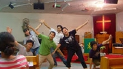
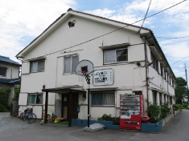
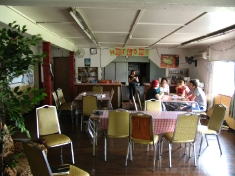

関西エリア KANSAI AREA
アジアンセンター大阪(Osaka Base)
アジアンセンター大阪(Osaka Base)

アジアンセンター大阪では，日本と韓国の若者たちが一緒になって訓練を受け、共に働いています。隣人に対する細やかな配慮の賜物を与えられている日本人と、積極的な人間関係構築の賜物が与えられている韓国人が共に生活しながら、その文化的な違いを超え、主のもとで自分を見つめ直し、お互いを受け入れ愛し合い、切磋琢磨され主に用いられる者へと成長していきたいと願っています。
私たちのビジョンは、韓国から「和解の福音」を伝えるために日本宣教に献身して来た若者たちによって日本の若者たちもチャレンジを受け，一つとされて日本の福音化のために共に立ち上がり，戦争により傷ついたアジアの国々にも和解の福音を携えて行き、その上、中東のムスリムの国々へ赦しと和解の福音を届けるチームとしての用いられることです。
- 大学生 伝道
- 大阪周辺 市内伝道
- DTS (イエス弟子訓練学校) www.ywamosaka.com/dts.html
- outreach（国内、海外伝道）
- 野宿者への救済ミニストリー （大阪市内の公園）
1989年 YWAM Korea（イエス伝道団）の派遣宣教師として金正煥、他3人の宣教師が来日。
大阪府高槻市で活動を始める。
1991年 大阪市に移転し「アジアンセンター大阪」 ベースとして新しくスタート
1993年 1期DTSが始まる。
23期 DTS 生徒募集中！
期間 2015年 5月 2日～10月
住所：〒533-0031大阪市東淀川区西淡路3-7-8
Tel : 06-6325-1614 (Faxと同じです)
DTS E-mail : osaka.dts@gmail.com
Website.http://www.ywamosaka.com/dts.html
高槻ベース(Takatsuki Base)
高槻ベース(Takatsuki Base)

住所：〒569-0003 大阪府高槻市上牧町 2-15-3
Tel：072-669-0555
Email： YWAMOsaka@gmail.com